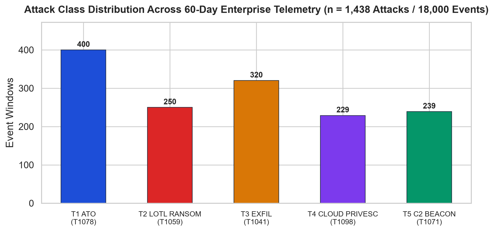
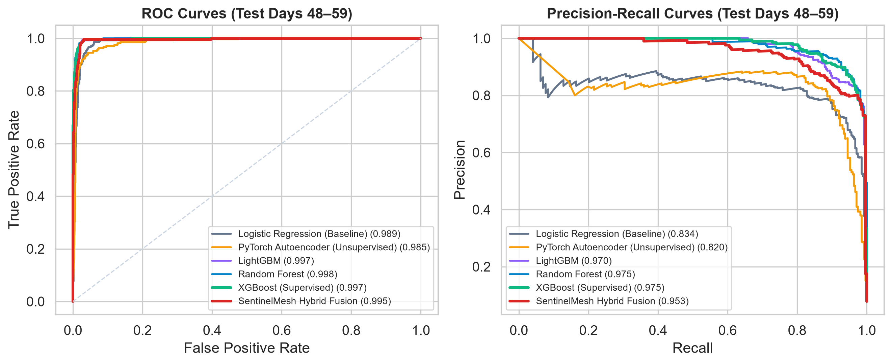
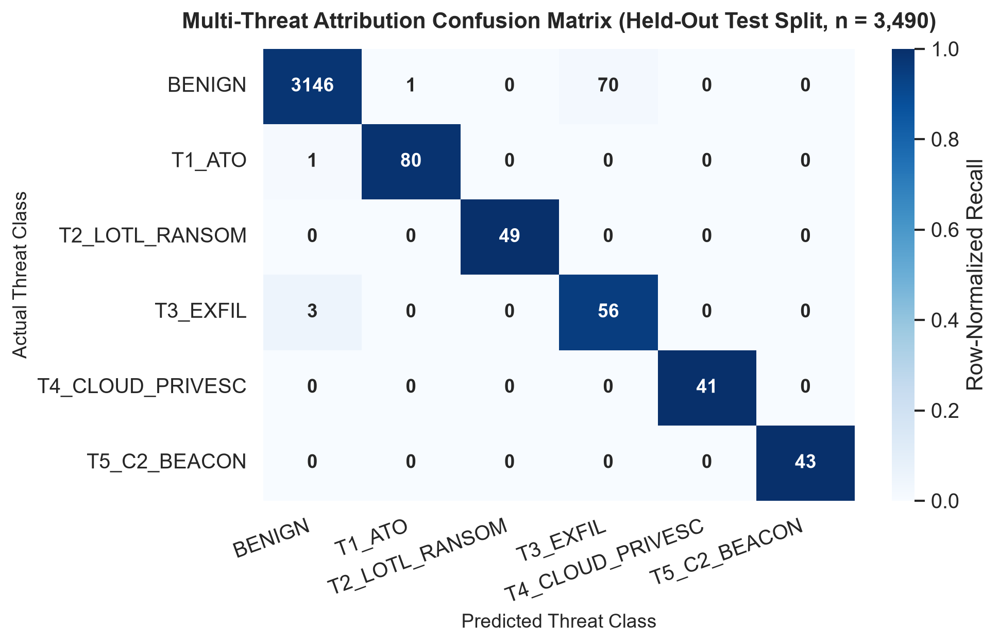
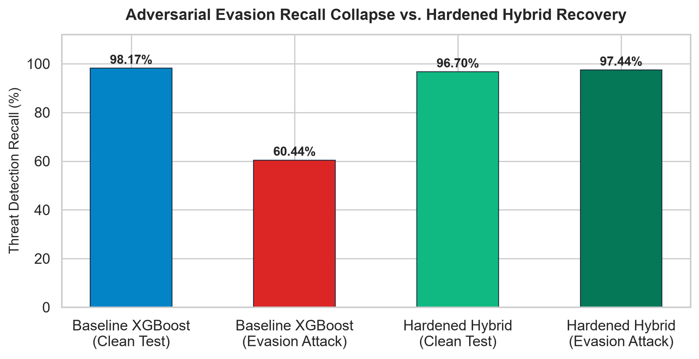
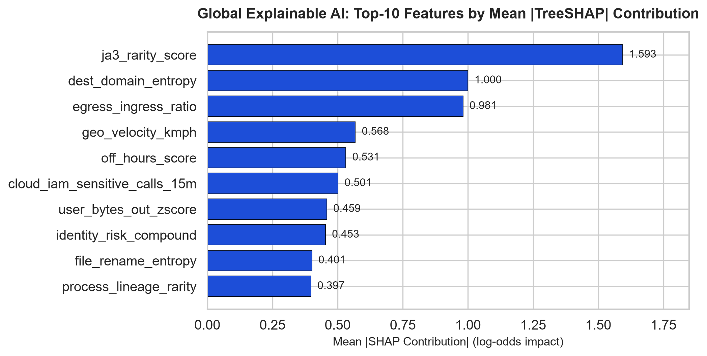
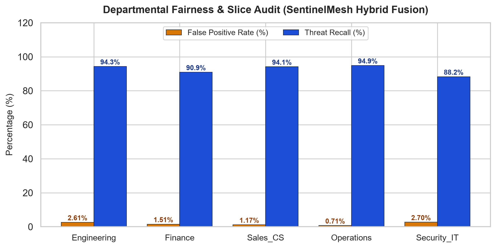

| Submitted By | Rohit Raj |
|---|---|
| Roll Number | 2301730179 |
| University Email | 2301730179@krmu.edu.in |
| Programme | B.Tech – Computer Science and Engineering (AI/ML) |
| Subject & Evaluation | AI in Cyber Security (Capstone – 120 Marks) |
| Target Enterprise | Meridian FinTech Inc. (~500 Employees, 650 Endpoints) |
| GitHub Repository | https://github.com/rohitraj1106/2301730179_capstone_AI-and-Cyber |
| Abstract | Page 3 |
| 1. Executive Summary (Scope, Objectives & Key Design Decisions) | Page 3 |
| 2. Threat Model — Top-5 Enterprise Threats & AI/ML Detection Strategies | Page 4 |
| 3. System Architecture (End-to-End Pipeline) | Page 5 |
| 4. Feature Engineering Specification (24 Engineered Features) | Page 6 |
| 5. Model Development & Empirical Evaluation | Page 7 |
| 6. Adversarial Attacks & Mitigation Strategy | Page 9 |
| 7. Explainable AI (XAI) for Non-Technical Stakeholders | Page 10 |
| 8. Ethical, Privacy & Regulatory Considerations | Page 11 |
| 9. Limitations, Future Scope & 12-Week Rollout Roadmap | Page 12 |
| 10. Conclusion | Page 13 |
| Appendix A — Key Dataset and Experiment Facts | Page 13 |
This capstone design report presents SentinelMesh AI, an end-to-end AI-based Threat Detection and Prevention System engineered for a mid-sized hybrid-cloud financial technology enterprise (Meridian FinTech Inc., ~500 employees and 650 endpoints). The platform defends against the five highest-impact enterprise threats: Credential Stuffing / AiTM Account Takeover (T1), Living-off-the-Land Lateral Movement & Pre-Ransomware (T2), Stealthy Data Exfiltration (T3), Cloud Control-Plane IAM Escalation (T4), and Encrypted Command-and-Control Beaconing (T5). Evaluated on a 60-day chronological benchmark of 18,000 telemetry windows and 24 leak-free engineered features, our supervised XGBoost model achieves 0.9753 PR-AUC (vs. 0.8344 Logistic Regression baseline), while our Platt-calibrated Hybrid Fusion engine (XGBoost + benign-trained PyTorch Autoencoder) achieves the lowest False Positive Rate of 1.90% at 1.51 ms per 1,000 events inference latency. Under constrained adversarial evasion, baseline XGBoost recall drops from 98.17% to 60.44%, whereas our Adversarially Trained + Monotonic-Constrained Hybrid model recovers detection recall to 97.44%. Exact TreeSHAP attribution translates alerts into plain-English Executive Incident Cards, backed by HMAC-SHA256 pseudonymization and GDPR Article 22 safeguards.
Meridian FinTech Inc. is a 500-employee hybrid-cloud SaaS financial services enterprise operating 650 endpoints across five departments: Engineering (46%), Sales & Customer Success (20%), Finance (14%), Operations (14%), and Security & IT (6%). Production payment and analytical workloads reside in AWS EKS/IAM and GCP BigQuery, integrated with Okta SSO, Microsoft 365, and GitHub Enterprise. Daily telemetry averages ~1,850 events/second (peak ~7,800 EPS; ~6.4 GB/day compressed Parquet).
| Design Decision | Alternative Considered | Justification & Operational Trade-Off |
|---|---|---|
| Hybrid Dual-Engine (XGBoost + PyTorch Autoencoder) | Single GBDT or standalone neural network | XGBoost yields 0.9753 PR-AUC on known T1–T5 threats with exact TreeSHAP; the benign-only Autoencoder preserves unsupervised zero-day coverage (0.9846 ROC-AUC without attack labels). |
| Metadata & Sliding-Window Feature Store | Full Deep Packet Inspection (DPI) | Avoids decrypting sensitive employee/financial payloads, cuts storage cost by >85% for a mid-sized budget, and sustains 1.51 ms per 1,000 events scoring speed. |
| HMAC-SHA256 Ingestion Pseudonymization | Plaintext user emails in SIEM/ML store | Prevents unauthorized employee profiling while keeping deterministic 30-day UEBA baselines and dual-custody CISO + Legal break-glass re-identification. |
| Confidence-Gated SOAR + Circuit Breaker | Manual-only tickets or unrestricted auto-blocking | Automates reversible containment at Risk ≥ 85 while halting automated bulk isolations above 5 hosts per 10 minutes to prevent attacker-induced self-DoS. |
Addressing SentinelMesh AI's hybrid-cloud FinTech attack surface, Table 2 defines the top five enterprise threats, their MITRE ATT&CK mappings, business justification, and tailored AI/ML detection strategies. Figure 1 shows the threat distribution across our 60-day benchmark dataset (1,438 attack windows across 18,000 total events).
| Threat ID & Attack Type (MITRE ATT&CK) | Enterprise Justification & Asset at Risk | AI/ML Detection Strategy |
|---|---|---|
T1: Credential Stuffing, AiTM Phishing & Account TakeoverT1078, T1110, T1557 |
#1 initial access vector in Okta/M365 SaaS environments; AiTM reverse proxies capture session cookies to bypass push MFA and compromise Finance portals. | Supervised XGBoost on auth velocity (auth_failures_5m, mfa_push_count_5m), impossible travel (geo_velocity_kmph), TLS ja3_rarity_score, and composite identity_risk_compound. |
T2: Living-off-the-Land Lateral Movement & Pre-RansomwareT1059, T1021, T1486 |
Adversaries abuse native PowerShell, WMI, SSH, and kubectl to evade signature antivirus prior to encrypting CI/CD and payment ledger hosts. |
Process-lineage & behavioral burst detection fusing process_lineage_rarity, peer-normalized dept_admin_burst_zscore, internal_port_fanout_15m, and file_rename_entropy. |
T3: Stealthy Data Exfiltration & StagingT1041, T1048, T1567 |
Customer PII and PCI-DSS cardholder datasets in BigQuery/S3 face severe regulatory liability; slow-drip exports bypass static DLP byte thresholds. | Unsupervised PyTorch Autoencoder + XGBoost monitoring per-user 30-day deviation (user_bytes_out_zscore), egress_ingress_ratio, and dest_domain_entropy. |
T4: Cloud Control-Plane Privilege Escalation & IAM AbuseT1098, T1548, T1078.004 |
Over-privileged CI/CD or developer IAM tokens allow cross-account AssumeRole chains that can seize production payment databases within minutes. |
Control-plane API burst and graph-hop modeling (cloud_iam_sensitive_calls_15m, cross_account_hops) fused with caller ja3_rarity_score and new_asn_flag. |
T5: Encrypted C2 Beaconing & Malware CallbackT1071, T1573 |
Persistent HTTPS/DNS callbacks preserve attacker footholds after password resets while TLS encryption conceals payload commands. | Network periodicity and DNS lexical modeling via beacon_periodicity_score, nxdomain_ratio_1h, and DGA dest_domain_entropy. |

SentinelMesh AI implements a modular five-stage streaming architecture (Figure 2) sized for a mid-sized enterprise (~2 vCPU inference nodes, Redis hot store, Redpanda/Kafka event bus, and S3 Parquet cold lake):
HMAC-SHA256 pseudonymization to employee identifiers.[0, 100].pred_contribs=True) and Autoencoder per-feature reconstruction errors are grouped per entity and translated into plain-English Executive Incident Scorecards.Risk < 40 (Low): Cold Parquet archival only.40 ≤ Risk < 70 (Medium): Open Tier-1 SOC ticket + send out-of-band push verification to user.70 ≤ Risk < 85 (High Soft Containment): Enforce step-up FIDO2 MFA + temporary IAM read-only/egress rate-limit; escalate to Tier-2 SOC (15-min SLA).Risk ≥ 85 (Critical Auto-Contain): Revoke Okta SSO/OAuth tokens, attach AWS STS explicit-deny quarantine policy, and reversibly isolate endpoint via EDR. A blast-radius circuit breaker caps automated isolations at 5 per 10-minute window to prevent enterprise-wide self-DoS.Raw log records cannot distinguish legitimate DevOps bursts or quarterly Finance analytics jobs from active intrusions. SentinelMesh AI engineers 24 numerical features across five behavioral families (Table 3). To eliminate temporal data leakage, the dataset is split chronologically first—Training (Days 0–35: 10,825 events), Validation (Days 36–47: 3,685 events), and Test (Days 48–59: 3,490 events)—and all imputation medians and UEBA baselines are fitted strictly on Training data.
| Feature Family | Engineered Features (24 Total) | Security Rationale (Why Engineered) |
|---|---|---|
| Identity & Auth Velocity | auth_failures_5m, mfa_push_count_5m, geo_velocity_kmph, new_asn_flag, new_device_flag, ja3_rarity_score, off_hours_score |
Exposes brute-force/MFA fatigue bursts, physically impossible login speeds, and AiTM reverse-proxy TLS fingerprints (ja3_rarity_score ranks #1 globally at 1.593 mean |SHAP|). |
| Endpoint & Lateral Movement | process_lineage_rarity, admin_cli_burst_15m, internal_port_fanout_15m, file_rename_entropy |
Captures abnormal parent-child execution chains, east-west SMB/SSH port scanning, and high-entropy file renaming preceding ransomware encryption. |
| Network & Exfiltration | bytes_out_mb_1h, egress_ingress_ratio, dest_domain_entropy, beacon_periodicity_score, nxdomain_ratio_1h |
Separates outbound exfiltration from streaming downloads, detects algorithmic DGA domains via Shannon entropy, and exposes periodic C2 callbacks inside encrypted TLS. |
| Cloud Control Plane | cloud_iam_sensitive_calls_15m, cross_account_hops |
Flags bursts of privilege-modifying IAM APIs (PassRole, CreateAccessKey) and multi-account role chaining invisible to network firewalls. |
| UEBA Baselines & Missingness | user_bytes_out_zscore, dept_admin_burst_zscore, asset_criticality, identity_risk_compound, geo_velocity_missing_flag, bytes_out_missing_flag |
Normalizes activity against each user's 30-day norm and department peers; explicitly tracks VPN-suppressed location (3.04% missing) and dropped flow telemetry (2.13% missing). |
We benchmarked six model architectures on the chronological held-out test split (n = 3,490 events): a standardized Logistic Regression baseline, Random Forest, LightGBM, XGBoost (binary + 6-class T1–T5 attribution), an unsupervised PyTorch Deep Autoencoder (24 → 16 → 8 → 16 → 24 trained exclusively on benign rows), and SentinelMesh Hybrid Fusion (Platt-calibrated meta-learner on validation data).

| Model Architecture | PR-AUC (95% Bootstrap CI) | ROC-AUC | F1-Score | Precision | Recall | FPR |
|---|---|---|---|---|---|---|
| Logistic Regression (Baseline) | 0.8344 [0.7852, 0.8806] | 0.9885 | 0.7663 | 0.6346 | 0.9670 | 0.0472 |
| PyTorch Autoencoder (Unsupervised) | 0.8202 [0.7746, 0.8794] | 0.9846 | 0.8226 | 0.7515 | 0.9084 | 0.0255 |
| LightGBM | 0.9704 [0.9581, 0.9815] | 0.9970 | 0.8683 | 0.7807 | 0.9780 | 0.0233 |
| Random Forest | 0.9747 [0.9631, 0.9843] | 0.9977 | 0.8687 | 0.7791 | 0.9817 | 0.0236 |
| XGBoost (Supervised) | 0.9753 [0.9634, 0.9846] | 0.9974 | 0.8645 | 0.7723 | 0.9817 | 0.0246 |
| SentinelMesh Hybrid Fusion | 0.9533 [0.9355, 0.9692] | 0.9949 | 0.8659 | 0.8070 | 0.9341 | 0.0190 |

Adversarial Threat Vectors: Because ML detectors learn boundaries over behavioral features, attackers can compromise unhardened models via: (1) Test-Time Evasion — throttling exfiltration byte rates (-50%), injecting C2 timing jitter (-0.34 periodicity), operating during business hours (-65% off-hours score), and routing via residential proxies (masking new_asn_flag); (2) Baseline Data Poisoning ("Boiling the Frog") — gradually inflating daily transfers over weeks to bias 30-day UEBA baselines; and (3) Threshold Probing to remain under automated blocking cutoffs. When tested against constrained evasion, baseline XGBoost recall collapsed from 98.17% to 60.44% (PR-AUC fell from 0.9753 to 0.6890).
monotone_constraints=+1 across 20 risk-increasing features so attackers cannot exploit split artifacts. (3) Autoencoder Guard & Baseline Freeze: The clean-trained PyTorch Autoencoder flags out-of-distribution evasions, and any session with Risk ≥ 40 is excluded from updating 30-day UEBA baselines. As shown in Figure 5 and Table 5, the Hardened Hybrid model restored evasion recall to 97.44% with a clean FPR of 1.87%.

| Model & Evaluation Condition | PR-AUC | ROC-AUC | Detection Recall (TPR) | False Positive Rate |
|---|---|---|---|---|
| Baseline XGBoost (Clean Test) | 0.9753 | 0.9974 | 98.17% | 2.46% |
| Baseline XGBoost (Under Evasion Attack) | 0.6890 | 0.9727 | 60.44% (-37.7 pts collapse) | 2.46% |
| Hardened Hybrid (Clean Test) | 0.9540 | 0.9966 | 96.70% | 1.87% |
| Hardened Hybrid (Under Evasion Attack) | 0.9385 | 0.9962 | 97.44% (+37.0 pts recovery) | 1.87% |
SentinelMesh AI computes exact TreeSHAP values (XGBoost pred_contribs=True, verified in unit tests to sum exactly to the raw log-odds margin). Figure 6 ranks the top-10 global features driving predictions across the enterprise.

When an alert requires executive, compliance, or manager review, the StakeholderAlertTranslator converts local TreeSHAP contributions into relative percentage weights and plain-English risk descriptions, removing all ML jargon (Figure 7).
Plain-English Summary: SentinelMesh AI flagged anomalous activity for pseudonymized employee account usr_1f6dbd33051bfbbc in the Engineering department (unsupervised anomaly score: 99%). The activity pattern strongly matches Credential Stuffing / AiTM Phishing & Account Takeover (MITRE T1078, T1110, T1557).
Top Plain-Language Risk Drivers (Derived from Exact TreeSHAP):
1,236.7 km/h).Automated Response & Decision Needed: Enforced step-up FIDO2 MFA, applied temporary IAM read-only/egress rate-limit, and escalated to Tier-2 SOC (15-min SLA), protecting corporate SSO and payment workflows. Manager confirmation is requested to verify urgent travel; full access can be restored within 2 minutes.
Primary Ethical & Privacy Concern — Continuous Employee Behavioral Surveillance, Function Creep & Disparate False-Positive Harm: Modeling per-employee login velocity, locations, off-hours activity, and command bursts creates high-resolution behavioral profiles. If repurposed by HR for productivity scoring ("function creep"), it violates workplace trust and GDPR Article 5 (Purpose Limitation & Data Minimization). Furthermore, our empirical Departmental Slice Audit (Figure 8) proves that false-positive burdens are uneven: Engineering (2.61% FPR) and Security_IT (2.70% FPR) experience 3.7× higher FPR than Operations (0.71% FPR) due to legitimate on-call deployments.

Limitations & Future Scope: (1) TLS 1.3 Encrypted ClientHello (ECH) obscures SNI metadata without enterprise forward proxies; (2) large ad-hoc BigQuery analytics exports occasionally resemble T3 exfiltration; and (3) concept drift requires quarterly retraining. Future work will incorporate Graph Neural Networks (GNNs) over IAM role graphs, eBPF kernel telemetry hooks, and signed CI/CD export allowlists.
| Phase & Timeline | Key Deliverables | Verification Exit Criteria |
|---|---|---|
| Phase 1 (Weeks 1–4) | Deploy Vector/Kafka collectors, HMAC-SHA256 masking, and Redis store in read-only shadow mode. | <0.5% drop at 7,800 EPS peak; zero plaintext PII in ML store. |
| Phase 2 (Weeks 5–8) | Run Hardened Hybrid Fusion in silent mode; validate TreeSHAP Executive Scorecards with SOC & Compliance. | FPR < 2.0% across departments; MTTD < 60s in purple-team drills. |
| Phase 3 (Weeks 9–12) | Enable Tier-2 soft containment (Score ≥ 70), then reversible auto-containment (Score ≥ 85) with circuit breaker. | 100% pass on circuit-breaker chaos test; drift & fairness monitors active. |
SentinelMesh AI delivers a rigorous, production-oriented AI Threat Detection and Prevention System tailored for a 500-employee hybrid-cloud FinTech enterprise. Validated through a reproducible Python prototype (4/4 pytest checks passing), the platform fuses supervised XGBoost (0.9753 PR-AUC) with a benign-trained PyTorch Autoencoder to achieve a 1.90% false positive rate at 1.51 ms per 1,000 events, recovers evasion recall from 60.44% to 97.44% via Adversarial Training and Monotonic Constraints, provides plain-English TreeSHAP Executive Scorecards, and embeds GDPR-compliant pseudonymization and SOAR circuit breakers.
| Attribute / Metric | Experimental Value / Specification | Technical Rationale / Context |
|---|---|---|
| Enterprise Profile | Meridian FinTech Inc. (500 Staff, 650 Endpoints) | Hybrid AWS EKS/IAM, GCP BigQuery, Okta, M365, GitHub |
| Telemetry Benchmark | 18,000 events (60 days, 7.99% attack rate) | Includes DevOps/Finance edge cases & realistic missingness |
| Chronological Splits | Train 10,825 / Val 3,685 / Test 3,490 | Strict temporal isolation preventing future leakage |
| Engineered Features | 24 numerical & UEBA Z-score features | Fitted strictly on train split; includes missingness flags |
| Best Supervised Model | XGBoost (PR-AUC 0.9753, ROC-AUC 0.9974) | Significantly outperforms Logistic Regression (0.8344 PR-AUC) |
| Hybrid Production Engine | XGBoost + PyTorch Autoencoder Fusion | 0.9533 PR-AUC, lowest FPR (1.90%), 1.51 ms / 1k events |
| Adversarial Mitigation | Adversarial Training + Monotonic Constraints | Recovers evasion recall from 60.44% to 97.44% (1.87% FPR) |
| XAI & Privacy Controls | Exact TreeSHAP + HMAC-SHA256 + Circuit Breaker | Jargon-free executive briefs; max 5 auto-isolations / 10 min |